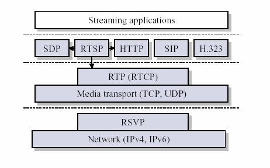

Mike的分享空间
date: 2013.05.23
目录:
RTP全名是Real-time Transport Protocol(实时传输协议). 它是IETF提出的一个标准, 对应的RFC文档为RFC3550(RFC1889为其过期版本). RFC3550不仅定义了RTP, 而且定义了配套的相关协议RTCP(Real-time Transport Control Protocol, 即实时传输控制协议). RTP用来为IP网上的语音, 图像, 传真等多种需要实时传输的多媒体数据提供端到端的实时传输服务. RTP为Internet上端到端的实时传输提供时间信息和流同步, 但并不保证服务质量, 服务质量由RTCP来提供.
RTP用于在单播或多播网络中传送实时数据. 们典型的应用场合有如下几个.
RTP(实时传输协议), 顾名思义它是用来提供实时传输的, 因而可以看成是传输层的一个子层. 图 1给出了流媒体应用中的一个典型的协议体系结构.
 图 1 流媒体体系结构
从图中可以看出, RTP被划分在传输层, 它建立在UDP上. UDP协议一样, 为了实现其实时传输功能, RTP也有固定的封装形式. TP用来为端到端的实时传输提供时间信息和流同步, 但并不保证服务质量. 服务质量由RTCP来提供.
不少人也把RTP归为应用层的一部分, 这是从应用开发者的角度来说的. 操作系统中的TCP/IP等协议栈所提供的是我们最常用的服务, 而RTP的实现还是要靠开发者自己. 因此从开发的角度来说, RTP的实现和应用层协议的实现没不同, 所以可将RTP看成应用层协议.
RTP实现者在发送RTP数据时, 需先将数据封装成RTP包, 而在接收到RTP数据包, 需要将数据从RTP包中提取出来.
一个协议的封装是为了满足协议的功能需求的. 前面提出的功能需求, 可以推测出RTP封装中应该有同步源和时戳等字段, 但更为完整的封装是什么样子呢？请看图2.
图 2 RTP的头部格式
版本号(V) : 2比特, 用来标志使用的RTP版本.
填充位(P) : 1比特, 如果该位置位, 则该RTP包的尾部就包含附加的填充字节.
扩展位(X) : 1比特, 如果该位置位的话, RTP固定头部后面就跟有一个扩展头部.
CSRC计数器(CC) : 4比特, 含有固定头部后面跟着的CSRC的数目.
标记位(M) : 1比特,该位的解释由配置文档(Profile)来承担.
载荷类型(PT) : 7比特, 标识了RTP载荷的类型.
序列号(SN) : 16比特, 发送方在每发送完一个RTP包后就将该域的值增加1, 接收方可以由该域检测包的丢失及恢复包序列. 列号的初始值是随机的.
时间戳 : 32比特, 记录了该包中数据的第一个字节的采样时刻. 一次会话开始时, 时间戳初始化成一个初始值. 使在没有信号发送时, 时间戳的数值也要随时间而不断地增加(时间在流逝嘛). 间戳是去除抖动和实现同步不可缺少的.
同步源标识符(SSRC) : 32比特, 同步源就是指RTP包流的来源. 同一个RTP会话中不能有两个相同的SSRC值. 标识符是随机选取的 RFC1889推荐了MD5随机算法.
贡献源列表(CSRC List) : 0～15项, 每项32比特, 用来标志对一个RTP混合器产生的新包有贡献的所有RTP包的源. 混合器将这些有贡献的SSRC标识符插入表中. SRC标识符都被列出来, 以便接收端能正确指出交谈双方的身份.
RTP需要RTCP为其服务质量提供保证, 因此下面介绍一下RTCP的相关知识.
RTCP的主要功能是: * 服务质量的监视与反馈 * 媒体间的同步 * 多播组中成员的标识. RTP会话期间, 各参与者周期性地传送RTCP包. TCP包中含有已发送的数据包的数量, 丢失的数据包的数量等统计资料, 因此, 各参与者可以利用这些信息动态地改变传输速率, 甚至改变有效载荷类型. RTP和RTCP配合使用, 它们能以有效的反馈和最小的开销使传输效率最佳化, 因而特别适合传送网上的实时数据.
RTCP也是用UDP来传送的, 但RTCP封装的仅仅是一些控制信息, 因而分组很短, 所以可以将多个RTCP分组封装在一个UDP包中.
TCP有如下五种分组类型.
| 类型| 缩写表示 | 用途 |
|-----|--------------------------------|-------|
| 200 | SR(Sender Report) | 发送端报告 |
| 201 | RR(Receiver Report) | 接收端报告 |
| 202 | SDES(Source Description Items) | 源点描述 |
| 203 | BYE | 结束传输 |
| 204 | APP | 特定应用 |
表1 RTCP的5钟分组类型上述五种分组的封装大同小异, 下面只讲述SR类型, 而其它类型请参考RFC3550.
发送端报告分组SR(Sender Report) 用来使发送端以多播方式向所有接收端报告发送情况. SR分组的主要内容有: 相应的RTP流的SSRC, RTP流中最新产生的RTP分组的时间戳和NTP, RTP流包含的分组数, RTP流包含的字节数. SR包的封装如图3所示.
图3 RTCP头部的格式
版本(V) : 同RTP包头域.
填充(P) : 同RTP包头域.
接收报告计数器(RC) : 5比特, 该SR包中的接收报告块的数目, 可以为零.
包类型(PT) : 8比特, SR包是200.
长度域(Length) : 16比特, 其中存放的是该SR包以32比特为单位的总长度减一.
同步源(SSRC) : SR包发送者的同步源标识符. 对应RTP包中的SSRC一样.
NTP Timestamp(Network time protocol) SR包发送时的绝对时间值. NTP的作用是同步不同的RTP媒体流.
RTP Timestamp : 与NTP时间戳对应, 与RTP数据包中的RTP时间戳具有相同的单位和随机初始值.
Sender's packet count : 从开始发送包到产生这个SR包这段时间里, 发送者发送的RTP数据包的总数. SRC改变时, 这个域清零.
Sender's octet count : 从开始发送包到产生这个SR包这段时间里, 发送者发送的净荷数据的总字节数(不包括头部和填充). 发送者改变其SSRC时, 这个域要清零.
同步源n的SSRC标识符 : 该报告块中包含的是从该源接收到的包的统计信息.
丢失率(Fraction Lost) : 表明从上一个SR或RR包发出以来从同步源n(SSRC_n)来的RTP数据包的丢失率.
累计的包丢失数目 : 从开始接收到SSRC_n的包到发送SR,从SSRC_n传过来的RTP数据包的丢失总数.
收到的扩展最大序列号 : 从SSRC_n收到的RTP数据包中最大的序列号,
接收抖动(Interarrival jitter) : RTP数据包接受时间的统计方差估计
上次SR时间戳(Last SR,LSR) : 取最近从SSRC_n收到的SR包中的NTP时间戳的中间32比特. 如果目前还没收到SR包, 则该域清零.
上次SR以来的延时(Delay since last SR,DLSR) : 上次从SSRC_n收到SR包到发送本报告的延时.
当应用程序建立一个RTP会话时, 应用程序将确定一对目的传输地址. 目的传输地址由一个网络地址和一对端口组成, 有两个端口: 一个给RTP包, 一个给RTCP包, 使得RTP/RTCP数据能够正确发送. RTP数据发向偶数的UDP端口, 而对应的控制信号RTCP数据发向相邻的奇数UDP端口(偶数的UDP端口＋1), 这样就构成一个UDP端口对. RTP的发送过程如下, 接收过程则相反.
实时流协议RTSP(Real-Time Streaming Protocol)是IETF提出的协议, 对应的RFC文档为RFC2362.
从图1可以看出, RTSP是一个应用层协议(TCP/IP网络体系中). 以C/S模式工作, 它是一个多媒体播放控制协议, 主要用来使用户在播放流媒体时可以像操作本地的播放器一样进行控制, 即可以对流媒体进行播放, 暂停/继续, 后退和前进等控制.
资源预定协议RSVP(Resource Reservation Protocol)是IETF提出的协议, 对应的RFC文档为RFC2208.
从图1可以看出, RSVP工作在IP层之上传输层之下, 是一个网络控制协议. RSVP通过在路由器上预留一定的带宽, 能在一定程度上为流媒体的传输提供服务质量. 某些试验性的系统如网络视频会议工具vic中就集成了RSVP.
怎样重组乱序的数据包
可以根据RTP包的序列号来排序.
怎样获得数据包的时序
可以根据RTP包的时间戳来获得数据包的时序.
声音和图像怎么同步
根据声音流和图像流的相对时间(即RTP包的时间戳), 以及它们的绝对时间(即对应的RTCP包中的RTCP), 可以实现声音和图像的同步.
接收缓冲和播放缓冲的作用
接收缓冲用来排序乱序了的数据包; 播放缓冲用来消除播放的抖动, 实现等时播放.
表2 协议分析要求
表2给出了协议分析要求. 容易看出要获取RTP音频包中的音频信息很容易, 直接将RTP包的包头去掉即可. 当然, 要成功地播放解码获取到的音频流, 需要知道其编码, 这可从RTP包包头的有效载荷类型字段(PT)获得.
RFC文档: RFC3550对应RTP/RTCP, RFC2362对应RTSP, RFC2208对应RSVP
http://www.faqs.org/rfcs/, 上面有全面的英文RFC文档
http://www.cnpaf.net/, 有不少协议分析文档, 也有中文RFC文档, 但质量不是特别高.